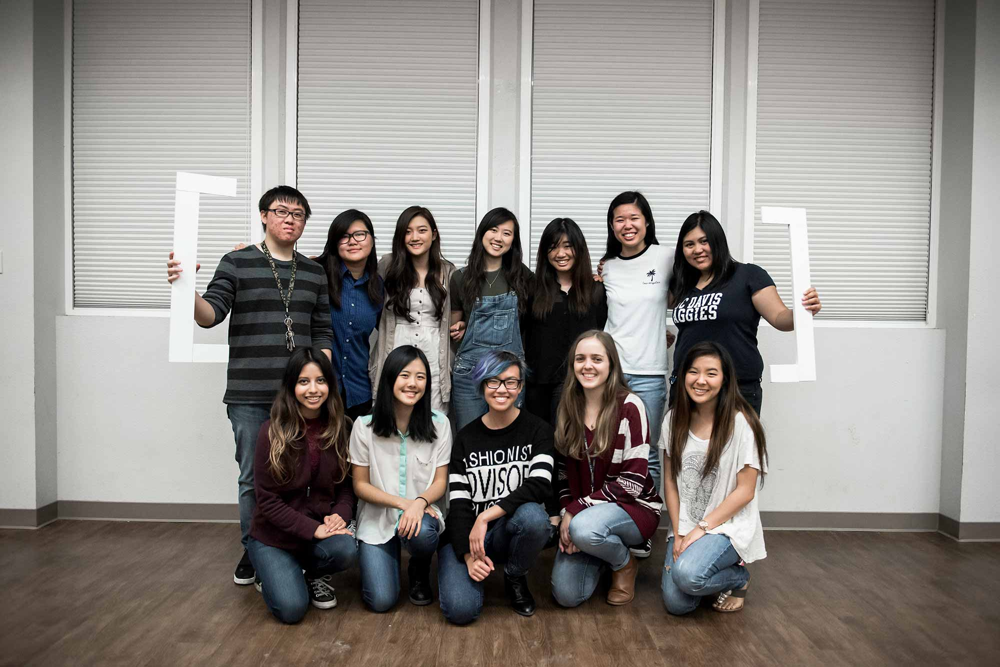

The Design Career Fair is a student run organization. We collaborate in teams to make a successful career fair. I joined the career fair, because I wanted collaborate with my fellow design classmates; I did not have much collaborative opportunities before and I felt that this was a good opportunity to learn from my classmates and work with them.
Design Career Fair
Graphics Team
I joined the graphics team who was led by Cindy Pham; because I wanted to learn how to follow a branding direction when designing and how to work with a big team of graphic designers, who all have their own style, ideas, and views about design.
Branding
The biggest challenge we faced as a team was creating brand and following that brand throughout the process. Our first task was to design a logo. We had to design a logo that would embody the Design Career Fair and versatile enough for any future themes. This task took many weeks to complete, due to our numerous iterations and ideas.
Originally, we wanted to create a flat geometric logo. However, the C looked like pac-man. So we created many iterations to try to remove that image out of the C. One team member, Bethany Yeap, created a three-dimensional iteration. The team felt that it was interesting, but with so many different shades in our logo, it would be hard for later years to use and change according to their theme. So, the logo reduced the amount of shades, two for each color; it would be manageable, while still making it seem three dimensional.
This year’s theme was [insert future here]. We felt that the most interesting aspect of this theme was the brackets, so we tried to carry this theme out throughout our graphic campaign this year.
My Contributions
Although the entire process was collaborative, we were allowed to choose what projects we wanted to do. One project that I designed was a booklet that was sent to employers. This booklet featured the schedule of the event, the location, the attendees, and the list of items companies should bring. This book also had many iterations with the feedback from the graphics lead, the event experience lead, and Arielle Cababat, a member of the graphics team who also worked on the booklet and created the directions graphics for the booklet. View the booklet here!
I signed up to create the graphics for the name tags that was used during the event. The name tag had to incorporate our branding and this year’s theme. First, I created 6 various iterations of possible name tags. The team thought that the brackets were spaced well enough, but too harsh in my mock-ups. They also liked the small logo for the career fair in the left corner and they felt that the big transparent logo made it distracting. With this feedback, I created a name tag design that incorporated the two most successful aspects of the mock-ups.